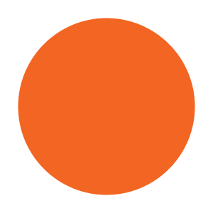

<!DOCTYPE html>
<html>
    <head>
        <title>Simple RT Experiment</title>
        <script src="jspsych/jspsych.js"></script>
        <script src="jspsych/plugin-html-keyboard-response.js"></script>
        <script src="jspsych/plugin-image-keyboard-response.js"></script>
        <script src="jspsych/plugin-preload.js"></script>
        <script src="jspsych/plugin-image-button-response.js"></script>
        <!-- Add jspsych-pavlovia plugin -->
        <script type="text/javascript" src="lib/jspsych-7-pavlovia-2022.1.1.js"></script>
        <link href="jspsych/jspsych.css" rel="stylesheet" type="text/css"/>
    </head>
    <body></body>
    <script>
        // Save Data to CSV on finish 
        var jsPsych = initJsPsych({
            on_finish: function(){
                //jsPsych.data.displayData(); 
                jsPsych.data.get().localSave('csv', 'SimpleRTButton.csv');
            }
        });

        // Create timeline variable 
        var timeline = []; 

        //Preload content 
        var preload = {
            type: jsPsychPreload, 
            images: ['img/blue.png', 'img/orange.png']
        };
        timeline.push(preload); 

        //Welcome Page
        var welcome = {
            type: jsPsychHtmlKeyboardResponse, 
            stimulus: "Welcome to the Experiment. Press any key to begin."
        }; 
        timeline.push(welcome); 

        //Instructions 
        var instructions = {
            type: jsPsychHtmlKeyboardResponse, 
            stimulus: `
            <p> In this experiment, a circle will appear in the center of the screen. </p> <p> If the circle is <strong>blue</strong>, press the F button as fast as you can. </p> <p> If the circle is <strong>orange</strong>, press the J button as fast as you can. </p>
            <div style='width: 700px;'>
            <div style='float: left;'></img>
            <p class='small'><strong>Press the F button</strong></p></div>
            <div style='float: right;'></img>
            <p class='small'><strong>Press the J button</strong></p></div>
            </div>
            <p>Press any key to begin.</p>
            `,
            post_trial_gap: 2000
        };
        timeline.push(instructions); 

        // Define Test Trials 
        /*var blue_trial = {
            type: jsPsychImageKeyboardResponse, 
            stimulus: 'img/blue.png', 
            choices: ['f', 'j']
        }; 
        var orange_trial = {
            type: jsPsychImageKeyboardResponse, 
            stimulus: 'img/orange.png', 
            choices: ['f', 'j']
        }; 
        timeline.push(blue_trial, orange_trial); */

        // Create an array that includes all types of stimulus trials and a fixation trial
        var test_stimuli = [
            {stimulus: 'img/blue.png', correct_response: 0}, 
            {stimulus: 'img/orange.png', correct_response: 1 }
        ]; 

        var fixation = {
            type: jsPsychHtmlKeyboardResponse, 
            stimulus: '<div style="font-size:60px;">+</div>', 
            choices: "NO_KEYS", 
            trial_duration: function(){
                return jsPsych.randomization.sampleWithoutReplacement([250, 500, 750, 1000, 1250, 1500, 1750, 2000], 1)[0]; 
            }, 
            data: {
                task: 'fixation'
            }
        }; 

        //Create a trial type that uses the stimulus variables we created 
        var test = {
            type: jsPsychImageButtonResponse, 
            stimulus: jsPsych.timelineVariable('stimulus'), 
            choices: ['f', 'j'], 
            data: {
                task: 'response', 
                correct_response: jsPsych.timelineVariable('correct_response')
            },
            on_finish: function(data) {
                data.correct = data.response === data.correct_response; 
            }
        }; 

        // Link the variables from test_stimuli to the above call to jsPsych.timelineVariable()
        var test_procedure = {
            timeline: [fixation, test], 
            timeline_variables: test_stimuli, 
            randomize_order: true, 
            repetitions: 5 
        }; 

        timeline.push(test_procedure); 

        // Create a debrief block that tells participants about their performance (accuracy and RT)
        var debrief_block = {
            type: jsPsychHtmlKeyboardResponse, 
            stimulus: function() {

                var trials = jsPsych.data.get().filter({task: 'response'}); 
                var correct_trials = trials.filter({correct: true}); 
                var accuracy = Math.round(correct_trials.count()/trials.count() *100); 
                var rt = Math.round(correct_trials.select('rt').mean()); 

                return `<p>You responded correctly on ${accuracy}% of the trials. </p><p>Your average response time was ${rt}ms.</p><p>Press any key to complete the experiment. Thank you!</p>`
            }
        };
        timeline.push(debrief_block);

        //Start the Experiment
        jsPsych.run(timeline); 
    </script>
</html>